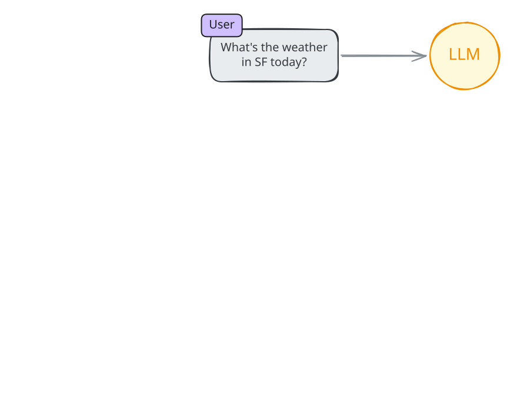
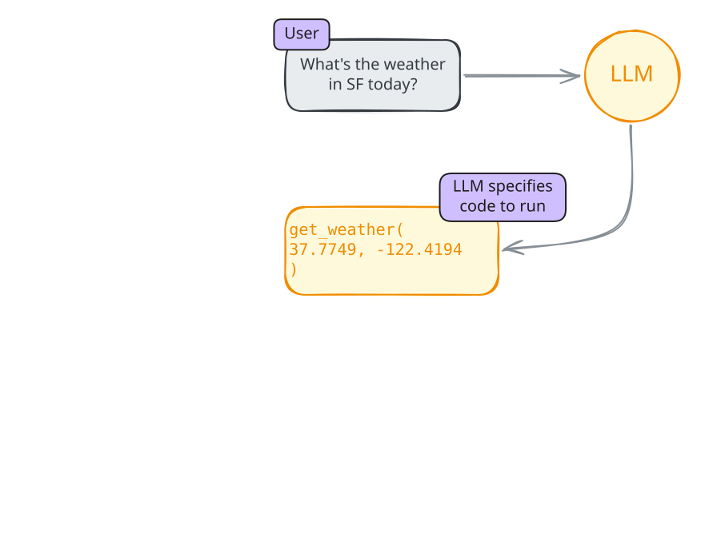
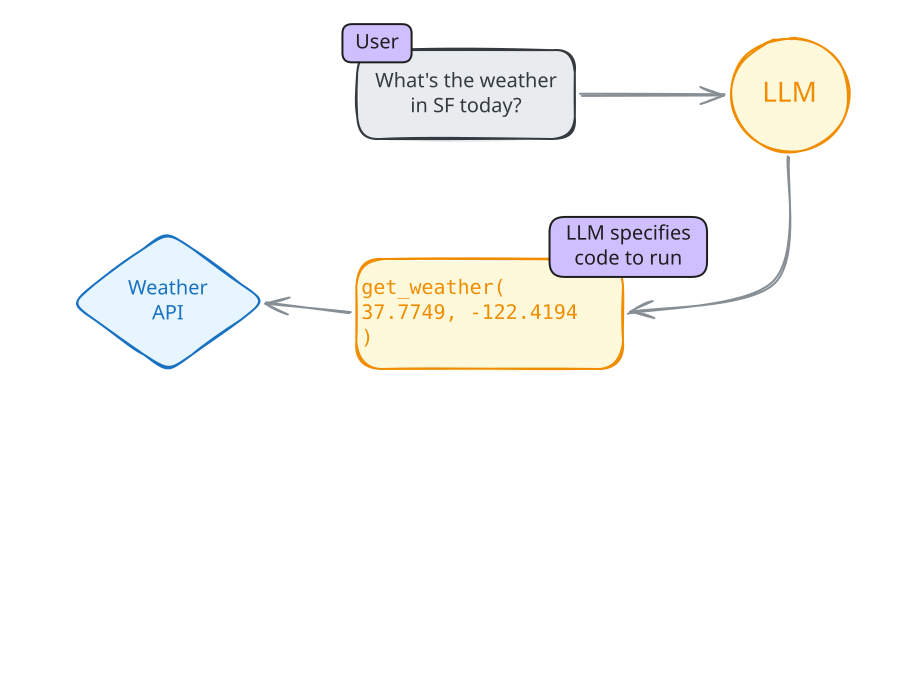
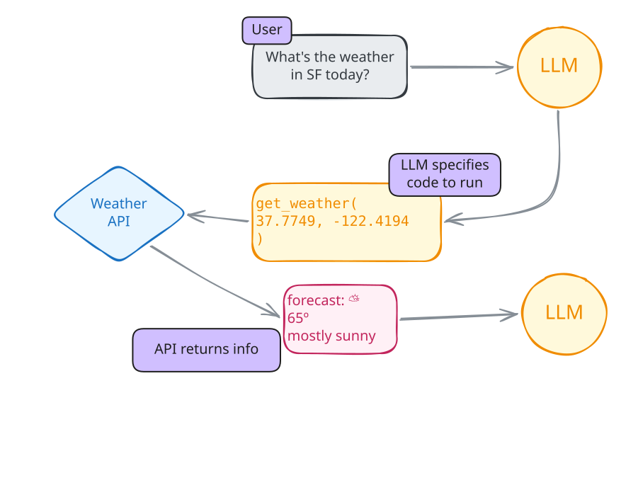
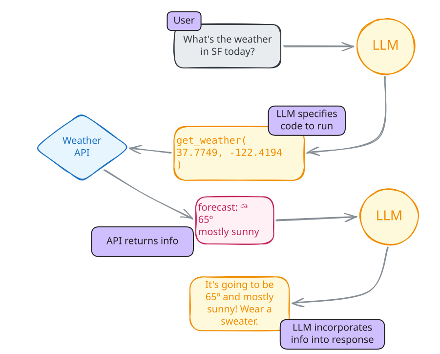
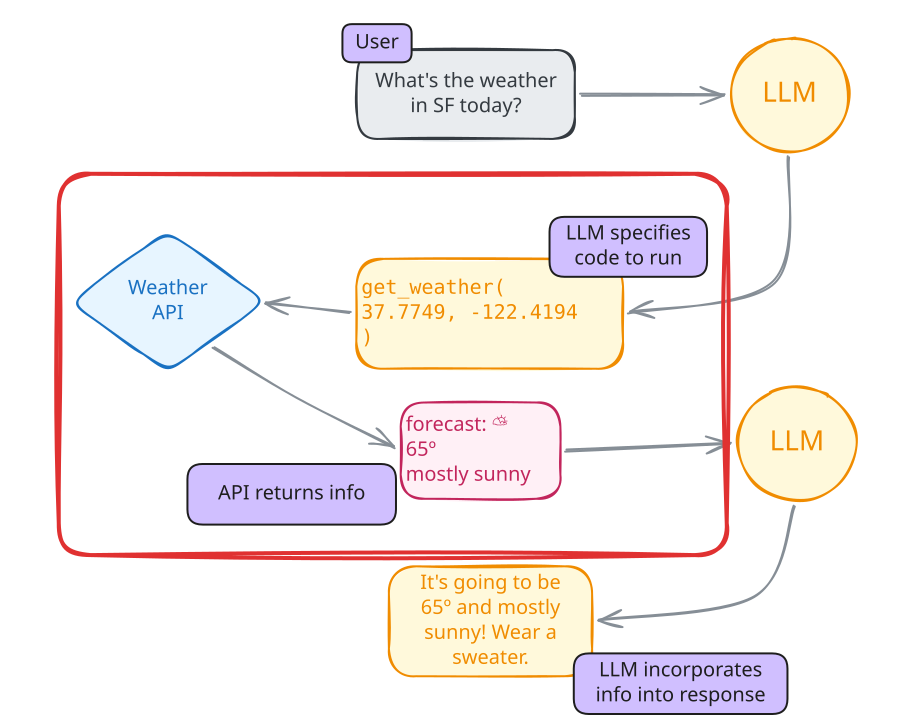
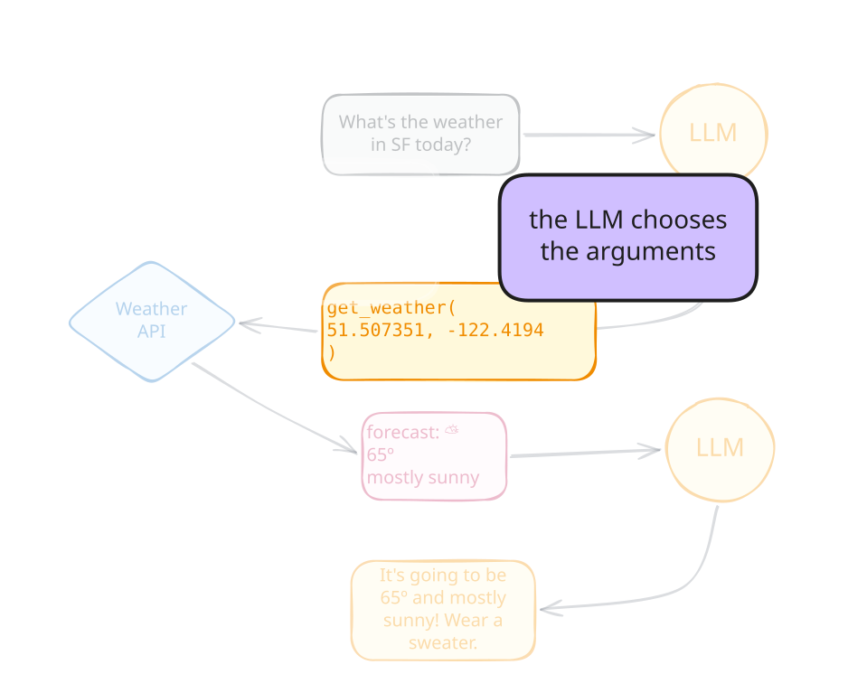
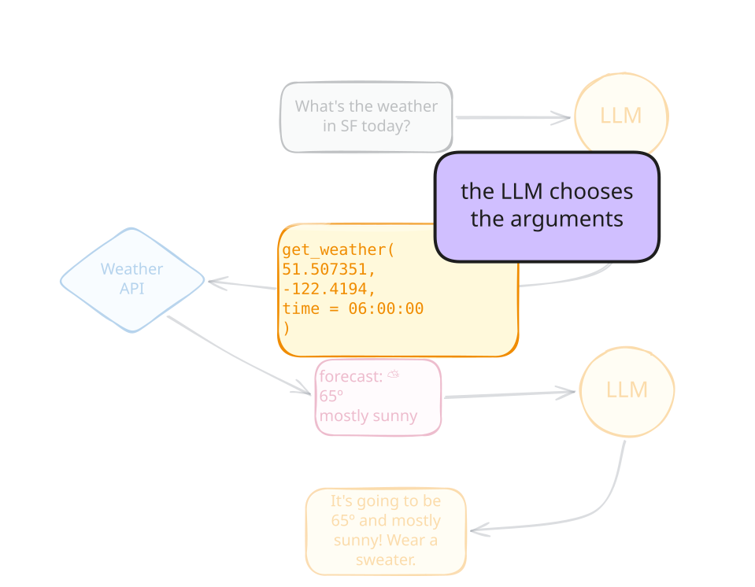

LLMs for Data Analysis in R
On their own, can LLMs… access the internet? run code? send an email? interact with the world?
Step 1
Write (or find) an R function that carries out your desired functionality.
Step 2
Document that function for the LLM.
Step 3: Register the tool
get_weather <- function(latitude, longitude) {
weathR::point_forecast(latitude, longitude)
}
get_weather_tool <- tool(
fun = get_weather,
description = "Get the weather for a location",
arguments =
list(
latitude = type_number("Latitude"),
longitude = type_number("Longitude")
)
)
chat$register_tool(get_weather_tool)◯ [tool call] get_weather(lat = 37.7749, lon = -122.4194)
● #> [{"time":"2026-05-01 14:00:00 PDT","temp":65,"dewpoint":1…
Here's the current weather for San Francisco:
**Current conditions (May 1, 2:00 PM PDT):**
- Temperature: 65°F
- Conditions: Mostly Sunny
- Humidity: 72%
- Wind: WSW at 7 mph
- Chance of rain: 0%type_() functionstype_() functionstype_boolean(description = NULL, required = TRUE)
type_integer(description = NULL, required = TRUE)
type_number(description = NULL, required = TRUE)
type_string(description = NULL, required = TRUE)
type_enum(values, description = NULL, required = TRUE)
type_array(items, description = NULL, required = TRUE)
type_object(
.description = NULL,
...,
.required = TRUE,
.additional_properties = FALSE
)





It just requests that tools be run.
The LLM controls:


create_tool_def()Using model = "gpt-4.1".
tool(
stats::rnorm,
"Generates random deviates from the normal distribution with specified mean and standard deviation.",
n = type_integer(
"Number of observations. If length(n) > 1, the length is taken to be the number required.",
required = TRUE
),
mean = type_number(
"Mean(s) of the normal distribution. Defaults to 0.",
required = FALSE
),
sd = type_number(
"Standard deviation(s) of the normal distribution. Defaults to 1.",
required = FALSE
)
)06_tool-callingWrite a get_country_spending() function that takes a country name and year and returns health spending by purpose.
Wrap it as a tool with tool() and register it.
Ask the model about spending for a specific country.
06:00
Does the model have access to the data?
No.
What does the model control?
How could we make this function better?
Also available: openai_tool_web_search(), google_tool_web_search()